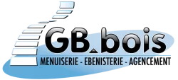

Site Web de l'entreprise GB BOIS
Projet en cours
Description
Description
Ce projet consiste à la création d’un site web fonctionnelle pour l’entreprise GB Bois en Chartreuse. Mise en contact avec la gérante de l’entreprise, nous avons ensemble fait le plan de ces besoins. Puis je me suis mise à la conception en partant de zéro vu que l’entreprise n’avait pas de site web. Le site web a avancé au fur et a mesure avec les modifications, les volontés de la cheffe d’entreprise.
Organisation
Dans le cadre de mon projet personnel de création d’un site web d’entreprise, j’ai mis en place une organisation rigoureuse afin d’assurer l’efficacité et la qualité du travail réalisé. J’ai organisé le développement en différentes phases : création de l’architecture du site, intégration des pages, ajout des fonctionnalités, optimisation et le visuel utilisateur. Grâce à cette organisation méthodique, j’ai pu mener mon projet de manière structurée, gagner en autonomie et développer mes compétences en gestion de projet et en développement web.
Compétences acquises
Ce projet m'a permis d'acquerir des compétences tels que l'autonomie, le contact client et l'organisation. J'ai pu aussi améliorer
Acces au projets
Conclusion
En conclusion, la réalisation de ce projet de création de site web d’entreprise a été une expérience très enrichissante. Il m’a permis de mettre en pratique mes compétences en développement web et en gestion de projet. Au-delà de l’aspect technique, ce projet m’a appris à anticiper les difficultés et à m’adapter face aux imprévus. J’ai également compris l’importance de l’écoute des besoins, de la communication de la rigueur et des tests réguliers pour garantir un résultat fonctionnel. Ce projet représente une étape importante dans mon parcours, car il m’a permis de gagner en autonomie, en confiance et en méthodologie. Il constitue une base solide pour mes futurs projets dans le domaine du développement web.
Enfin je reste à disposition de la gérante de GB Bois pour toute la maintenant et toutes les modifications qu'elle aimerait apporté.